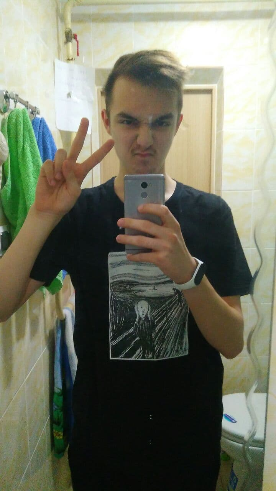

Котики, принимающие участие в проекте
Котик №1 (котик-тестировщик)
Особенности:
1) Супер-пупер классная
2) Владеет стихией огня
3) Возможность испепелять врагов взглядом
4) Возможность быть красивой вне зависимости от ситуации
5) Няшка-милашка, но если разозлить то няшка-злюшка
6) Возможность бесконечно слушать комплименты Котика №2
7) ...Будь потише друг, ведь тут играет Миша Круг (kekw)
Котик №2 (котик-разработчик)

Особенности:
1) Супер-пупер классный (нэнт)
2) Владеет стихией воды
3) Возможность испепелять врагов словами
4) Возможность любоваться красотой Котика №1 вне зависимости от ситуации
5) Няшка-злюшка, но если умилить то няшка-милашка
6) Возможность бесконечно говорить комплименты Котику №1
7) Это мой город грехов и я в нём Микки Рурк... (kekw)